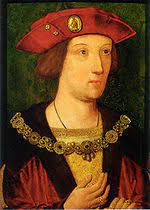
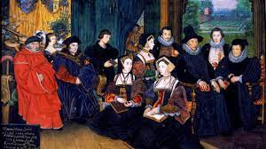
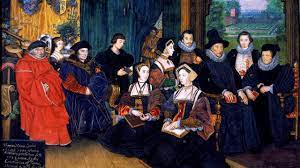
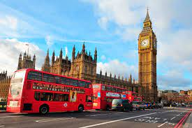
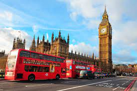
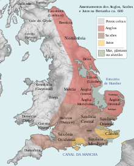
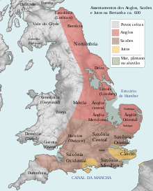

ENGLAND PAST
TOPICS COVERED
LOCATION
GOVERNMENT
ATTRACTIONS
CULTURE
CURIOSITY
HOW WAS
POPULATION
HOW WAS
ㅤIn the year 1500, England was under the reign of King Henry VII of the Tudor dynasty. This was a period of transformation and transition for the island nation. English society was rigidly stratified, with a clear division between social classes.
ㅤAt the top of the hierarchy was the nobility, made up of aristocrats and feudal lords, who enjoyed great political power and control over vast tracts of land. Below them were the clergy, represented mainly by the Roman Catholic Church, which exercised significant influence over the religious and political life of the country.
ㅤThe vast majority of the population, however, belonged to the peasant class. These farmers worked on the lands of feudal lords, providing the necessary labor for agricultural production, which was the basis of the English economy at the time. The peasants lived in modest conditions, dedicating themselves to subsistence agriculture.
ㅤEngland's economy in the 1500s was predominantly agricultural. The production of cereals, such as wheat and barley, was fundamental to the country's subsistence. In addition, raising sheep for wool production was an important economic activity, driven by the growing demand for woolen fabrics.
ㅤAlthough England was predominantly Catholic in the 1500s, this period witnessed the beginning of the spread of Protestant Reformation ideals. Although religious changes had not yet taken hold, some sections of English society began to question the practices and doctrines of the Roman Catholic Church.
ㅤIn the field of arts and culture, Tudor England flourished. During this period, English literature experienced a renaissance, with the work of renowned writers such as Thomas More, Thomas Wyatt and, of course, William Shakespeare. In addition, the theater gained prominence, with the construction of the famous theater The Globe, in London, where Shakespeare's plays were staged.
ㅤIn short, England in the 1500s was a stratified, agrarian, predominantly Catholic society, ruled by the Tudor dynasty. The nation was about to undergo major political, religious and social changes in the following centuries, which would define its trajectory and transform it into a global power.
ㅤAt the top of the hierarchy was the nobility, made up of aristocrats and feudal lords, who enjoyed great political power and control over vast tracts of land. Below them were the clergy, represented mainly by the Roman Catholic Church, which exercised significant influence over the religious and political life of the country.
ㅤThe vast majority of the population, however, belonged to the peasant class. These farmers worked on the lands of feudal lords, providing the necessary labor for agricultural production, which was the basis of the English economy at the time. The peasants lived in modest conditions, dedicating themselves to subsistence agriculture.
ㅤEngland's economy in the 1500s was predominantly agricultural. The production of cereals, such as wheat and barley, was fundamental to the country's subsistence. In addition, raising sheep for wool production was an important economic activity, driven by the growing demand for woolen fabrics.
ㅤAlthough England was predominantly Catholic in the 1500s, this period witnessed the beginning of the spread of Protestant Reformation ideals. Although religious changes had not yet taken hold, some sections of English society began to question the practices and doctrines of the Roman Catholic Church.
ㅤIn the field of arts and culture, Tudor England flourished. During this period, English literature experienced a renaissance, with the work of renowned writers such as Thomas More, Thomas Wyatt and, of course, William Shakespeare. In addition, the theater gained prominence, with the construction of the famous theater The Globe, in London, where Shakespeare's plays were staged.
ㅤIn short, England in the 1500s was a stratified, agrarian, predominantly Catholic society, ruled by the Tudor dynasty. The nation was about to undergo major political, religious and social changes in the following centuries, which would define its trajectory and transform it into a global power.
LOCATION
ㅤEngland is located in the central and southern part of the island of Great Britain, bordering Scotland to the north and Wales to the west. It has a coastline facing the North Sea, the Irish Sea, the English Channel and the Atlantic Ocean. Its capital is London, located in the southeast of England, on the banks of the River Thames. England is one of the four constituent nations of the United Kingdom.
GOVERNMENT
ㅤIn 1500, England was ruled by a monarchy, with King Henry VII of the Tudor dynasty in power. He held ultimate power, ruling with the support of advisors and nobles. Administration was conducted by the Royal Council, and the Roman Catholic Church exercised significant influence in the government. However, over the following centuries, England would undergo political and religious changes that would transform its system of government.

CULTURE
ㅤThe culture of England in the 1500s was marked by the flourishing of literature, with emphasis on writers such as William Shakespeare. The visual arts, influenced by the Renaissance, mainly portrayed religious themes. Sacred music was prominent, with emphasis on polyphonic vocal music.
ㅤFestivals and celebrations were important in everyday life, and popular folklore also played a significant role. Fashion was influenced by the nobility and Europe, with elaborate and distinctive clothes to differentiate social classes. The culture of England in the 1500s reflected the Tudor period of artistic and intellectual flowering. 
ㅤFestivals and celebrations were important in everyday life, and popular folklore also played a significant role. Fashion was influenced by the nobility and Europe, with elaborate and distinctive clothes to differentiate social classes. The culture of England in the 1500s reflected the Tudor period of artistic and intellectual flowering. 
CURIOSITY
ㅤ-Rise of the Tudor dynasty.
ㅤ-Maritime exploration led by John Cabot.
ㅤ-Literary flourishing with authors such as Thomas More, Thomas Wyatt and William Shakespeare.
ㅤ-Influence of the Roman Catholic Church and the increasing spread of Protestant Reformation ideas.
ㅤ-Extravagant fashion for the nobility, with elaborate clothing and ornate details.
ㅤ-Superstitions and popular beliefs, including belief in witches, fairies and other supernatural entities.
ㅤ-Festivals and traditional celebrations that were part of the social calendar.
ㅤ-Wars of the Roses and the Rise of the Tudors.
ㅤ-Tudor architecture, characterized by half-timbered houses with exposed wooden structures.
ㅤ-Presence of guilds and corporations that controlled trade and professions.
ㅤ-Theater popularity and construction of the famous The Globe theater in London.
ㅤ-Bubonic plague (Black Death) still posed a threat to public health.
ㅤ-Advances in medicine, including the use of medicinal herbs and the practice of bloodletting.
ㅤ-Typical food of the time, with an emphasis on meat, bread, vegetables and beer.
ㅤ-Influence of sacred music, especially polyphonic music, and the emergence of church choirs. 
ㅤ-Maritime exploration led by John Cabot.
ㅤ-Literary flourishing with authors such as Thomas More, Thomas Wyatt and William Shakespeare.
ㅤ-Influence of the Roman Catholic Church and the increasing spread of Protestant Reformation ideas.
ㅤ-Extravagant fashion for the nobility, with elaborate clothing and ornate details.
ㅤ-Superstitions and popular beliefs, including belief in witches, fairies and other supernatural entities.
ㅤ-Festivals and traditional celebrations that were part of the social calendar.
ㅤ-Wars of the Roses and the Rise of the Tudors.
ㅤ-Tudor architecture, characterized by half-timbered houses with exposed wooden structures.
ㅤ-Presence of guilds and corporations that controlled trade and professions.
ㅤ-Theater popularity and construction of the famous The Globe theater in London.
ㅤ-Bubonic plague (Black Death) still posed a threat to public health.
ㅤ-Advances in medicine, including the use of medicinal herbs and the practice of bloodletting.
ㅤ-Typical food of the time, with an emphasis on meat, bread, vegetables and beer.
ㅤ-Influence of sacred music, especially polyphonic music, and the emergence of church choirs. 
POPULATION
ㅤThe exact population of England in 1500 is difficult to determine precisely due to the lack of detailed demographic data at the time. However, estimates indicate that the population was between 2 and 3 million people.
ㅤIt is noteworthy that, compared to the current population, it was considerably smaller due to several factors such as technological limitations, shorter life expectancy and higher mortality rates. The population was mostly concentrated in rural areas, with cities having smaller populations compared to the present day. 
ㅤIt is noteworthy that, compared to the current population, it was considerably smaller due to several factors such as technological limitations, shorter life expectancy and higher mortality rates. The population was mostly concentrated in rural areas, with cities having smaller populations compared to the present day. 
ATTRACTIONS
WINDSOR CASTLE
CATEDRAL DE ST. PAUL
LONDON TOWER